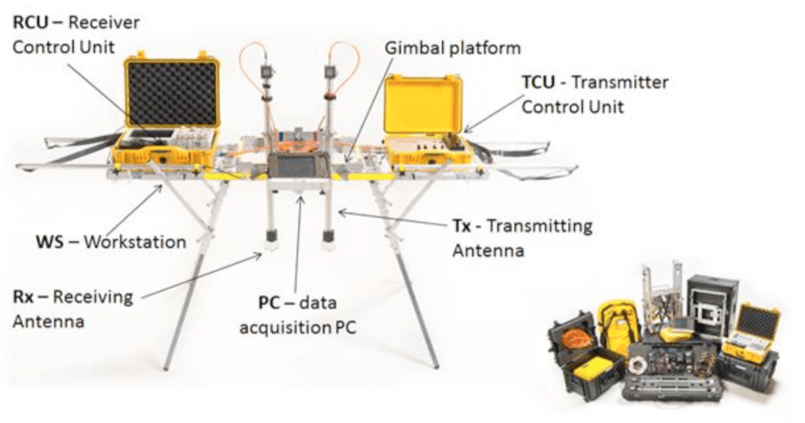
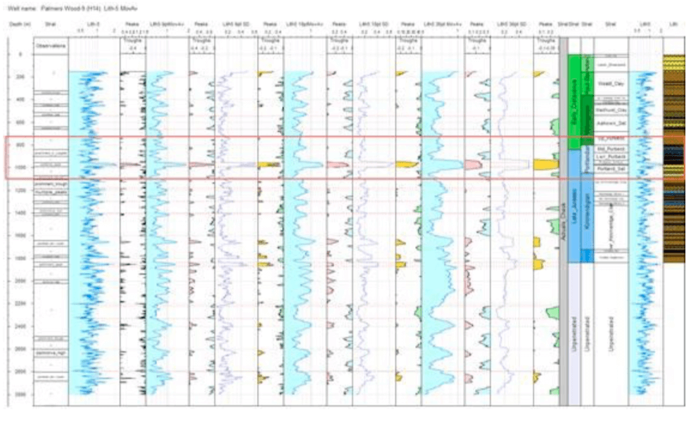
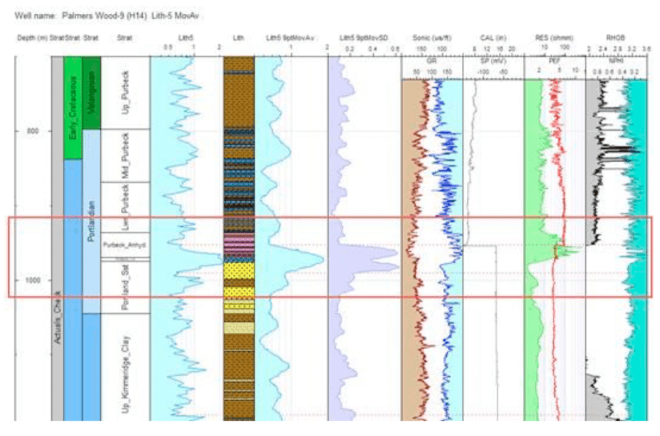

Onshore UK detection of subsurface geology to metre scale resolution and km scale depth, without drilling or seismic
- Gordon Stove - Adrok, Edinburgh, United Kingdom
- Dave Waters - Paetoro Consulting UK, London, United Kingdom
The potential
A dramatic revolution for subsurface mapping onshore would result from the development of a non-destructive tool that is portable, quick to deploy and which can discern geology from the surface in ways previously possible only through seismic and drilling.
Adrok is working towards realising this ambition with field studies similar to that presented here. If successful the applications are widespread within all subsurface industries - including exploration for mineral, hydrocarbon, geothermal, and aquifer resources. This is especially true in areas where normal seismic acquisition is difficult; or where there are political and environmental sensitivities to more disruptive techniques.
A new EM technique, fundamentally different to previous approaches
An InnovateUK supported project involving Adrok and IGas Plc provided an opportunity to conduct fieldwork and a feasibility study into innovative remote sensing onshore UK. Adrok’s core technology is called Atomic Dielectric Resonance (“ADR”). ADR is a patented investigative technique (Stove, 2005) which involves the measurement and interpretation of resonant energy responses of materials to the interaction of pulsed electromagnetic radio- waves (Stove et al., 2012; Doel et al. 2014; Stove & Doel, 2015). The tool has already enjoyed successes most notably in coal and mineral exploration, but the purpose of this project has been to test the applicability to hydrocarbon exploration and sedimentary sequences.
Adrok’s technology involves a portable tool which scans the subsurface using a focussed beam of electromagnetic radiation at radio wave frequencies (see Figure 1).
From ground level the tool measures subsurface dielectric permittivity, spectral data (energy, frequency and phase) and material resonance, without physically boring the ground. The materials encountered respond differently at atomic scales – absorbing, reflecting and resonating in different ways. The responses are recorded in time and depth converted with algorithms similar to seismic processing. These data produce “Virtual Boreholes” which can be calibrated with known geology to build up a reference database to assist understanding of lithologies, fluids, and geometries present in the subsurface. These facilitate lithostratigraphic interpretation of data from new, unknown locations.
This electromagnetic (EM) surveying technique is fundamentally different to lower resolution surveys of subsurface resistivity undertaken offshore (CSEM - controlled source electromagnetic surveying). The Adrok technology is higher resolution and higher frequency in nature, as well as being easy to apply onshore. While the tool uses similar parts of the EM spectrum to ground penetrating radar (GPR), it differs from GPR in utilising novel transmitter and receiver antennas and low power, pulsed transmissions with multiple centre frequencies that resonate the material it encounters.
 Figure 1: The portable ADR field scannerPracticalities of the tool – quick & simple to deploy
The scanning is completed quickly and cheaply over a period of weeks with portable equipment capable of being carried on a backpack through difficult terrain. Scans undertaken at historical well locations are useful to calibrate responses, but the scans do not themselves require any drilling, or any of the disruption associated with seismic surveys. Any subsurface information is achieved at a fraction of the cost of normal methods. The tool is especially relevant for de-risking areas of difficult terrain, complicated geological structure, high population density, or environmental sensitivity, where conventional subsurface seismic is difficult to acquire. The cost and time advantages make it worthy of consideration as a precursor tool even when those other avenues are feasible.
Objectives of this onshore UK study
The tool does remain at early stages of development so both its potential and its limits are still being explored. Focussing on a number of wells onshore UK, some involving hydrocarbon reservoirs, the principal aims of this study therefore included:
- Ascertaining whether the tools are responding to known subsurface geology and fluids.
- Advancing understanding of what is/isn’t driving the tool responses at a fundamental level.
- Ascertaining whether responses are happening consistently enough for correlation when calibrated with a known well.
- Ascertaining whether responses are happening consistently enough to predict lithology, stratigraphy, and fluid fill, when no local calibration well is available.
Preliminary results of ongoing work
For this project, Adrok successfully deployed the ADR scanner at 22 localities at IGas’ onshore UK properties in the Cheshire Basin, Gainsborough Trough, and Weald Basin. IGas provided Adrok with calibration data for 10 of these sites, from which subsurface lithologies were assigned and correlated by Adrok. From this, relationships between new and calibration data were established and then applied to interpret 2 “blind-test” holes in the Weald Basin.
The following conclusions have been possible:
- Noise and natural variability in atomic, microscopic, and macroscopic scale features driving the ADR response make analysis involved, but the tools are responding to subsurface geological features.
- When a calibrating well is available, this can allow broad scale correlation and identification of prominently responding units. Regional knowledge of subsurface and surface stratigraphy helps.
- The best responses occur at clear contrasts between relatively homogeneous beds of different lithology and/or fluid. Sandstone units of this nature are prospective not just for hydrocarbons but also geothermal resource.
- The tools are responding to geology, but non-uniqueness of response means that unambiguously predicting lithology from the data can be difficult. This non-uniqueness is also a feature of many wireline tools in sedimentary sequences so should not come as any real surprise.
- Objective, auditable, repeatable, mathematical data processing techniques for assisting visualisation of the data can significantly help analysis.
- Progress is being made utilising multiple data sets and their mathematical combination, designed to highlight particular lithologies, but prognoses are probabilistic rather than diagnostic in nature.
- A growing library of laboratory and field case studies and further well calibration is the key to increasing confidence in predictions, and to better understanding the theory underlying tool responses.
- Basins with a limited number of lithologies - limiting the number of variables (e.g. deltaic settings) would seem the best places to continue trial the tool.
Examples of some of the ADR results produced for this project are shown in Figures 2 and 3. Fuller results will be presented and discussed in the presentation.
 Figure 2: Weald Basin response from just one of the many possible metrics available from analysis, in this case nicely highlight a boundary between Purbeck Anhydrite and Portland Sandstone  Figure 3: Understanding precisely what the tool is seeing with different metrics and why is the subject of ongoing study, assisted by calibration with wireline measurements when available. For example, here, comparing with the resistivity, is it the anhydrite causing the response, or is there a HC signature in the top of the sandstone?No panacea, but a useful addition to the exploration arsenal
The tool is not a one-stop shop solution to geological problems but holds promise as another part of the risk- mitigation toolkit for subsurface professionals. It is at a comparable stage of development to deployment of the very first wireline tools, with scope for future expansion as subtleties are better understood.
This portable cheap sub-surface tool is responding to geological boundaries up to 3000 m deep with m-scale resolution. The analysis is non-trivial, but this should catch the notice of any geoscientist with an eye for innovation. The tool warrants further development and field testing. A number of major companies worldwide are already working with Adrok to do that.
Exciting scope for future testing and development
Onshore UK with its ample supply of wells, diverse geology, and onshore mineral, geothermal, and hydrocarbon resources, is just one good place to further investigate this exciting new technology. Globally, onshore stacked deltaic or turbiditic plays and massive sands for geothermal exploitation may represent other “low hanging fruit” in the sedimentary context. Twenty-first century advances in data analysis, including machine learning capabilities, give a sense that the technology is poised to grow in importance in subsurface resource exploration and monitoring.